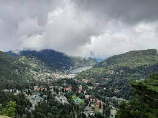
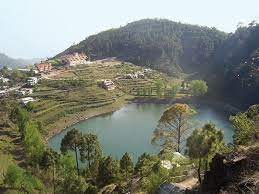
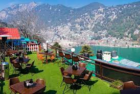

Desi travelers are help us to give all information about area where you want to visit
Welcome to Nanital The City of Lake



Nainital, the charming Himalayan lake town, is a picture-postcard perfect hill-station and one of the most popular in Northern India Commonly known as the ‘Lake District’.
Nainital is nestled high up in the Kumaon Himalayas at an altitude of around 2,000 m above sea level.
This beautiful town in surrounded by seven hills, popularly known as ‘Sapta-Shring’ – Ayarpata, Deopata, Handi-Bandi, Naina, Alma, Lariya-Kanta and Sher-Ka-Danda.
The majestic mountains and the sparkling waters of the lake add an immense lot to the beauty of the town. The town is centred around the emerald mountain lake Naini, which on most days is dotted with colourful sailboats.
According to mythology, the lake is believed to have been formed when the eyes of goddess “Sati” fell at this spot while her body was being carried by Lord Shiva after her death.
The summer capital of the United Provinces during the British era, the town has a strong colonial heritage with vibrant clusters of villas and bungalows.